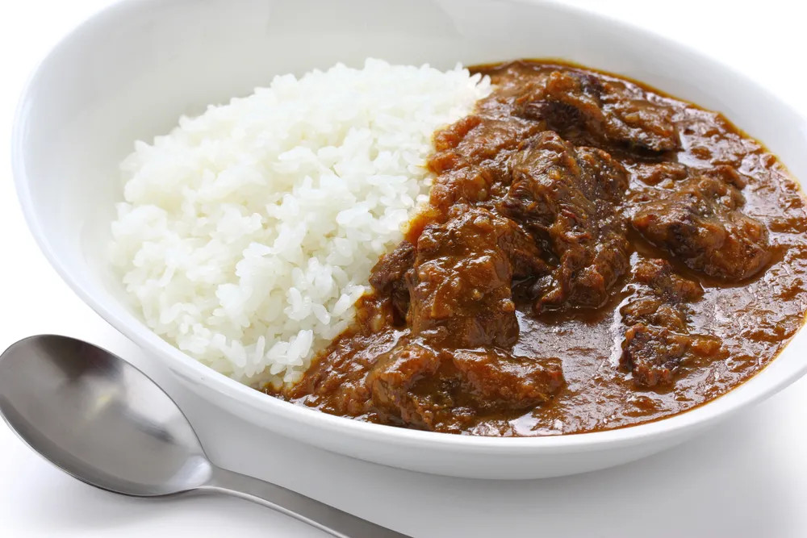

Pizza

Description
Beef Curry Rice is a classic asian inspired dish.
Simple in preparation, complex in taste. The perfect bachelor's dish.
- Rice
- Package of Curry Powder
- Cut of Skirt Steak
Steps
- Steam rice in rice cooker.
- Mix curry powder into pot on stovetop and prepare based on package instructions. Let simmer.
- Cut skirt steak into bite sized pieces and cook in a medium-high pan until brown and cooked to preference.
- Mix steak into simmering curry pot.
- Remove rice as needed into a bowl, cover with sauce/steak mix.
- Enjoy!